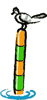
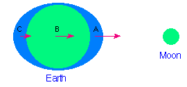

TidesTides on Earth result from the combined action of the Moon's gravitation pull on the Earth. The Moon pulls slightly harder on the side of the Earth nearer the Moon and this produces a 'stretching' force on the Earth.
There are typically 2 high and 2 low tides every day, which alternate and are about 6 hours apart. However, the cycle restarts about 51 minutes later each day because the Moon has to "catch up" to a rotating Earth.
The Sun also produces a tidal force on the Earth, but this force is weaker than the tidal force by the Moon because the Moon is a lot closer.
Note: The tidal force by the Sun is weaker than the tidal force by the Moon even though the gravitational pull by the Sun is stronger than the gravitational pull by the Moon.
When the Sun and the Moon are aligned, the high tides are very high (called spring tides) and the low tides are very low (called neap tides). The smallest extremes in tides occurs when the Sun and the Moon are at a right angle to the Earth.
Because the amplitude of the tides depends on the relative position of the Sun and the Moon, the tides are also related the Moon phases. A new or full moon corresponds to a spring tide. A quarter moon corresponds to a neap tide.
The tidal interaction between two objects tends to synchronize the rotational and orbital motions. The Moon, for example, rotates on its axis once a month and also completes one orbit about the Earth during the same time. The Moon thus always shows us the same side. This is called tidal locking. The Earth is bigger than the Moon and is therefore not yet tidally locked to the Moon, but it will be in billions of years from now.
The tidal forces exerted by Jupiter on its moon Io are so large that the solid surface of Io is raised and lowered by hundreds of meters twice in each rotational period. This motion so heats the interior of Io that it is probably mostly molten; as a consequence, Io is covered with active volcanoes and is the geologically most active object in the Solar System.

Page last modified: